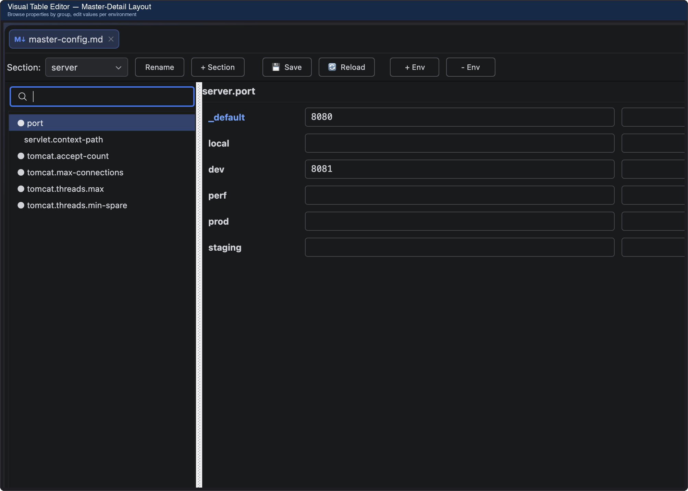
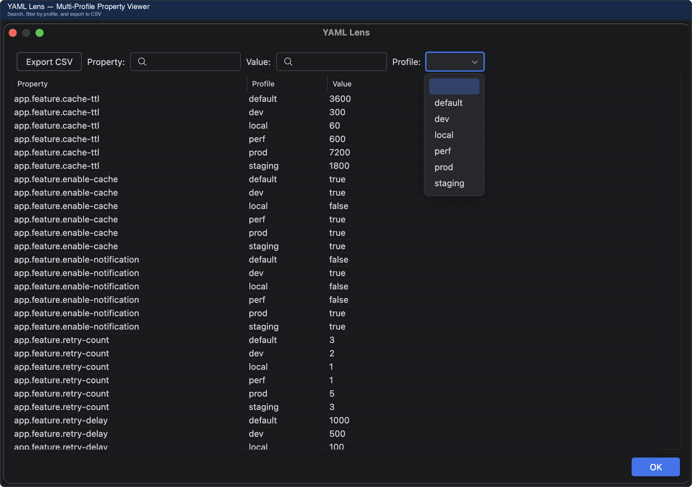
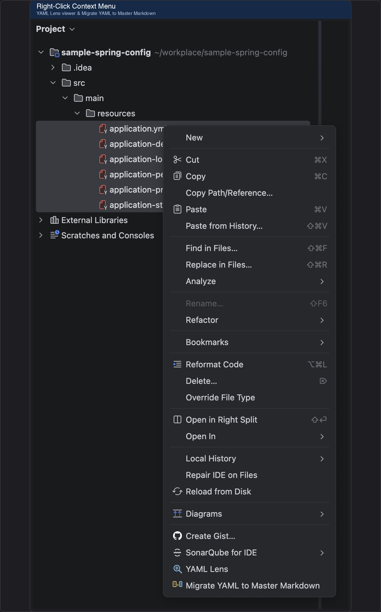
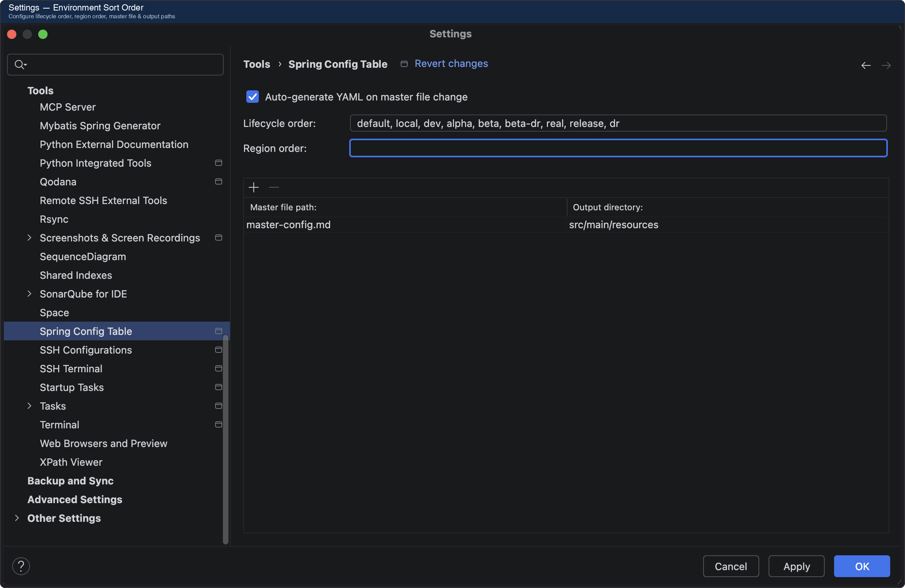

← 홈으로 돌아가기
Spring Config Table
PinkMandarin
Spring Boot 멀티 환경 YAML 설정을 하나의 Markdown 테이블로 관리하세요
출시됨
IntelliJ Plugin
Maven Plugin
스크린샷




앱 소개
Spring Boot 프로젝트에서 환경(dev, beta, real, gov...)별 YAML 설정 파일을 관리하는 건 번거롭고 실수가 잦습니다. 어떤 환경에 어떤 값이 들어가는지 한눈에 파악하기 어렵고, 파일이 많아질수록 관리 부담이 커집니다.
Spring Config Table은 모든 환경 설정을 하나의 Markdown 테이블에서 보고 편집할 수 있게 해줍니다. Markdown 파일을 저장하면 환경별 YAML 파일이 자동으로 생성되며, 기존 YAML 파일을 Markdown으로 마이그레이션하는 것도 가능합니다.
주요 기능
- 비주얼 테이블 에디터 — Master-Detail 레이아웃으로 그룹별 프로퍼티 탐색 및 환경별 값 편집
- YAML Lens — 여러 YAML/Markdown 파일을 하나의 검색 가능한 프로퍼티 테이블로 조회, CSV 내보내기
- YAML ↔ Markdown 마이그레이션 — 기존 YAML 파일을 주석 포함하여 Markdown으로 변환, 역변환
- 자동 YAML 생성 — Master Markdown 파일 변경 시 환경별 YAML 자동 재생성
- Spring Metadata 연동 — spring-configuration-metadata.json 기반 타입 감지 및 자동 완성
- 주석 보존 — YAML 인라인 주석을 HTML 주석으로 라운드트립 보존
- 멀티 모듈 — 모듈별 다른 마스터 파일과 출력 경로 설정 가능
- 환경 정렬 — 라이프사이클(dev, beta, real) × 리전 기반 커스텀 정렬
특징
한눈에 보는 설정
모든 환경의 설정값을 하나의 테이블에서 비교하고 편집하세요. 어떤 값이 어디에 있는지 즉시 파악할 수 있습니다.
주석까지 보존
YAML 주석을 Markdown HTML 주석으로 변환하여 마이그레이션과 재생성 과정에서도 주석이 유지됩니다.
자동 생성
Markdown 파일 저장 시 환경별 YAML이 자동으로 재생성됩니다. 수동 동기화 걱정이 없습니다.